방수산업기사 (2018-08-19 기출문제)
1과목: 방수일반
1. 기초의 기초판 형식에 의한 분류에 속하지 않는 것은?
- 독립기초
- 연속기초
- 말뚝기초
- 복합기초
(정답률: 77%)

2. 다음 중 건축도면에서 2점 쇄선으로 표현해야 하는 것은?
- 치수선
- 인출선
- 상상선
- 치수보조선
(정답률: 80%)
3. 수밀콘크리트에 관한 설명으로 옳지 않은 것은?
- 물-결합재비는 50% 이하를 표준으로 한다.
- 콘크리트의 소요 슬럼프는 되도록 작게 한다.
- 공기연행제 등을 사용하는 경우, 공기량은 5% 이상이 되도록 한다.
- 콘크리트의 소요 품질이 얻어지는 범위 내에서 배합 시 단위수량은 되도록 작게 한다.
(정답률: 55%)
4. 굳지 않은 콘크리트의 성질 중 워커빌리티에 관한 설명으로 옳지 않은 것은?
- AE제에 의한 연행공기는 워커빌리티를 개선한다.
- 작업의 난이도, 재료분리저항 정도 등을 나타내는 정량적인 성질이다.
- 비빔시간이 과도하게 길면 시멘트의 수확 촉진으로 워커빌리티가 나빠진다.
- 일반적으로 부배합의 경우가 빈배합의 경우 보다 워커빌리티가 좋다고 할 수 있다.
(정답률: 47%)
5. 건축물의 온도에 의한 신축팽창, 부동침하에 의하여 발생하는 건축의 전체적인 불규칙한 균열을 한 곳에 집중시키도록 설계 및 시공 시 고려되는 줄눈은?
- 신축줄눈
- 치장줄눈
- 시공줄눈
- 콜드조인트(Cold Joint)
(정답률: 70%)
6. 다음은 말비계를 조립하여 사용하는 경우에 관한 설명이다. ( )안에 알맞은 것은?
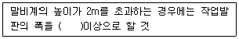
- 30cm
- 40cm
- 50cm
- 60cm
(정답률: 알수없음)
7. 철근콘크리트에 관한 설명으로 옳지 않은 것은?
- 자체중량이 크다.
- 내화·내구적이다.
- 내균열성이 우수하다.
- 형태를 자유롭게 구성할 수 있다.
(정답률: 55%)
8. 금속 커튼월의 성능 시험 중 시험소 실물 모형 시험(mock up test)의 시험종목에 속하지 않는 것은?
- 예비시험
- 기밀시험
- 차음시험
- 정압수밀시험
(정답률: 알수없음)
9. 다음 중 구조의 형식별 분류에서 일체식 구조에 속하는 것은?
- 목구조
- 벽돌구조
- 헌수구조
- 철근콘크리트구조
(정답률: 70%)
10. 산업재해가 발생되는 직접원인은 불안전한 상태와 불안전한 행동으로 나눌 수 있다. 다음 중 불안전한 행동에 속하지 않는 것은?
- 위험장소 접근
- 보호구의 잘못 하용
- 불안전한 상태 방치
- 안전방호장치의 결함
(정답률: 59%)
11. 다음의 일반화재에 관한 설명 중 ( )안에 알맞은 것은?
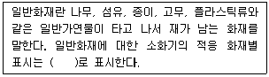
- A
- B
- C
- D
(정답률: 알수없음)
12. 콘크리트가 타설된 후 비교적 가벼운 물이나 미세한 물질 등이 상승하고, 무거운 골재나 시멘트는 침하하는 현상은?
- 블리딩
- 동결융해
- 레이턴스
- 컨시스턴시
(정답률: 80%)
13. 벽돌구조에 관한 설명으로 옳지 않은 것은?
- 내화·내구적이다.
- 외관이 장중·미려하다.
- 풍압, 지진 등의 횡력에 강하다.
- 구조와 시공법이 비교적 간단하다.
(정답률: 알수없음)
14. 수화열이 낮아 댐과 같은 매스 콘크리트 구조물에 사용되는 시멘트는?
- 조강포틀랜드시멘트
- 백색포틀랜드시멘트
- 중용열포틀랜드시멘트
- 초조강포틀랜드시멘트
(정답률: 알수없음)
15. 건축제도에서 치수 표기에 관한 설명으로 옳지 않은 것은?
- 치수는 특별히 명시하지 않는 한, 마무리 치수로 표시한다.
- 협소한 간격이 연속될 때에는 인출선을 사용하여 치수를 쓴다.
- 치수 기입은 치수선을 중단하고 선의 중앙에 기입하는 것이 원칙이다.
- 치수의 단위는 밀리미터(mm)를 원칙으로 하고, 이 때 단위 기호는 쓰지 않는다.
(정답률: 73%)
16. 목재에 관한 설명으로 옳지 않은 것은?
- 흡수성이 크다.
- 차음성이 있다.
- 열전도율이 크다.
- 가공성이 우수하다.
(정답률: 84%)
17. 다음 중 건축도면의 표시기호와 표시사항의 연결이 옳지 않은 것은?
- V-용적
- Wt-무게
- ø-반지름
- 솨-두께
(정답률: 70%)
18. 다음과 같은 작업조건에서 작업을 하는 근로자가 착용하여야 하는 보호구는?
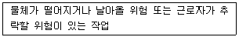
- 안전모
- 보안경
- 보안면
- 방진마스크
(정답률: 80%)
19. 건축제도에서 투상법 작도의 원칙은?
- 제1각법
- 제2각법
- 제3각법
- 제4각법
(정답률: 67%)
20. 안전·보건표지의 색채 중 금지의 용도에 사용되는 것은?
- 녹색
- 빨간색
- 파란색
- 노란색
(정답률: 64%)
2과목: 방수재료
21. 한국산업표준(KS)에 따른 수 팽창성 벤토나이트 방수 시트의 치수(나비×길이)로 옳은 것은?
- 1.2m×6m
- 1.2m×12m
- 2.4m×6m
- 2.4m×12m
(정답률: 39%)
22. 규산질계 분말형 도포방수재의 사용 부위에 관한 설명으로 옳지 않은 것은?
- 습윤 조건에 있는 콘크리트에서의 사용은 피한다.
- 직사광선을 직접 받는 콘크리트에서의 사용은 피한다.
- 구조물의 진동 또는 거동 환경 조건에서의 사용은 피한다.
- 산 및 염소 등의 화학적 영향을 받는 콘크리트에서의 사용은 피한다.
(정답률: 28%)
23. 개량 아스팔트 방수 시트를 1류와 2류로 구분 하는 기준이 되는 것은?
- 온도 특성
- 인장 강도
- 제품 치수
- 치수 안정성
(정답률: 60%)
24. 지하방수공사에 사용되는 방수재료의 요구성능으로 옳지 않은 것은?
- 내풍압성능
- 투수 저항 성능
- 습윤면 부착 성능
- 수중 유실 저항 성능
(정답률: 알수없음)
25. 방수재료의 구조체 균열부 거동대응성을 측정하는 시험항목은?
- 부착성능
- 내충격성능
- 내피로성능
- 온도의존성능
(정답률: 40%)
26. 다음 중 자착식형 고무화 아스팔트 방수시트에 요구되는 접합 안정 성능의 세부 성능에 속하는 것은?
- 부착 성능
- 내피로 성능
- 벗김 저항 성능
- 굴곡 저항 성능
(정답률: 37%)
27. 건설용 도막 방수재의 성능 시험을 위함 시험편의 제작 및 시험 환경 조건은 특별한 지정이 없는 한 표준상태로 한다. 다음 중 표준상태로 옳은 것은?
- (15±2)℃, (55±20)%
- (15±2)℃, (65±20)%
- (20±2)℃, (55±20)%
- (20±2)℃, (65±20)%
(정답률: 59%)
28. 방수공사에서 다음과 같이 정의되는 재료는?
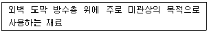
- 분산제
- 응고제
- 화장재
- 성형재
(정답률: 37%)
29. 온도의존성능 시험의 목적으로 가장 알맞은 것은?
- 취화 파괴되는 온도 평가
- 고온에서 휘발되는 양의 평가
- 고온 환경 하에서의 재료의 융점 변화 평가
- 고온 및 저온 환경 하에서의 재료의 인장 특성 변화 평가
(정답률: 46%)
30. 다음 설명에 알맞은 방수시트의 종류는?
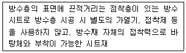
- 자착형 방수시트
- 섬유제 방수시트
- 개량 아스팔트 방수시트
- 합성 고분자계 방수시트
(정답률: 64%)
31. 합성고분자계 균질시트의 품질시험 항목에 속하지 않는 것은?F
- 인장 성능
- 접합 성상
- 온도 의존성
- 흘러내림 저항성능
(정답률: 30%)
32. 다음 중 지방산계 시멘트 액체형 방수재에 속하는 것은?
- 파라핀계
- 염화칼슘계
- 규산소다계
- 아크릴 에멀션계
(정답률: 37%)
33. 옥상녹화방수공사에서 방수층 및 방근충에 사용되는 소재가 갖추어야 할 요구 성능과 가장 거리가 먼 것은?
- 내근성
- 수밀성
- 차음성
- 내알칼리성
(정답률: 42%)
34. 합성고분자계 방수시트 중 섬유포 또는 성상이 서로다른 시트상의 것을 복합하여 치수 안정성, 역학적 물성 등을 개선한 것은?
- 보강 복합형 복합시트
- 일반 복합형 복합시트
- 가황 고무계 균질시트
- 비가황 고무계 균질시트
(정답률: 30%)
35. 아스팔트 루핑 제품의 종류 중 1280품에 관한 설명으로 옳은 것은?
- 제품의 나비가 1280mm이다.
- 제품의 길이가 1280mm이다.
- 제품의 단위 면적 질량이 1280g/m2이다.
- 원지의 단위 면적 질량이 1280g/m2이다.
(정답률: 65%)
36. 시멘트 액체형 방수재에 요구되는 성능에 속하지 않는 것은?
- 안정성
- 압축강도
- 인장강도
- 물흡수계수비
(정답률: 30%)
37. 물을 튀기는 성질 도는 표면에 물이 스며들지 않는 성질을 의미하는 용어는?
- 탄성
- 발수성
- 흡수성
- 흡습성
(정답률: 34%)
38. 합성고분자계 방수시트의 종류에 속하지 않는 것은?
- 가황 고무계
- 고무 아스팔트계
- 염화비닐 수지계
- 에틸렌 아세트산비닐 수지계
(정답률: 36%)
39. 시멘트 혼입 폴리머계 방수재의 품질시험 항목에 속하지 않는 것은?
- 신장률
- 부착강도
- 인장성능
- 내알칼리성
(정답률: 10%)
40. 건설용 도막 방수재의 주요 원료에 따른 구분에 속하지 않는 것은?
- 우레탄 고무계
- 아크릴 고무계
- 실리콘 고무계
- 네오프렌 고무계
(정답률: 40%)
3과목: 방수시공
41. 방수바탕의 형상에 관한 설명으로 옳지 않은 것은?
- 치켜올림부의 RC 바탕은 제물마감으로 한다.
- 볼록모서리는 직각으로 면처리되어 있어야 한다.
- 오목모서리는 아스팔트 외의 방수층은 직각으로 면처리되어 있어야 한다.
- 오목모서리는 아스팔트 방수층의 경우에는 삼각형으로 면처리되어 있어야 한다.
(정답률: 30%)
42. 합성고분자계 시트 방수공사 중 가황 고무계 시트 방수·접착공법에서 보호 및 마감의 표준은?
- 화장재
- 마감도료 도장
- 우레탄 포장재
- 현장타설 콘크리트
(정답률: 30%)
43. 벤토나이트 방수공사에서 벤토나이트 매트를 수직면에서 시공할 경우, 매트의 겹침은 최소 얼마 이상을 표준으로 하는가?
- 40mm
- 60mm
- 80mm
- 100mm
(정답률: 30%)
44. 도막방수공사에서 방수재의 도포에 관한 설명으로 옳지 않은 것은?
- 평면 부위를 도포한 다음, 치켜올림 부위의 순서로 도포한다.
- 고무 아스팔트계 도막방수재의 외벽에 대한 스프레이 시공은 아래에서부터 위의 순서로 실시한다.
- 방수재의 겹쳐 바르기는 원칙적으로 앞 공정에서의 겹쳐 바르기 위치와 동일한 위치에서 하지 않는다.
- 겹쳐 바르기 또는 이어 바르기의 시간간격을 초과한 경우, 프라이머를 도포하고 건조를 기다려 겹쳐 바르기 또는 이어 바르기를 한다.
(정답률: 42%)
45. 자착형 시트 방수공사에 사용되는 자재에 관한 설명으로 옳지 않은 것은?
- 프라이머는 8시간 이내에 건조되는 품질의 것으로 한다.
- 보강용 겔(gel)은 저점도의 제품으로 기밀성이 우수한 것으로 한다.
- 보강용 겔(gel)은 떠붙임이 용이한 도막형과 시공이 용이한 막대형으로 구분하여 적용한다.
- 보호완충재는 지하 외벽의 방수층 표면에 부착하여 모래 등의 되메우기재의 충격 및 침하로부터 방수층을 보호할 수 있는 것으로 한다.
(정답률: 50%)
46. 아스팔트 방수공사의 방수공법 중 실내 주차장(RC)에 적용되는 것은? (단, 표준시방서의 내용에 따르며, 보호 및 마감이 현장타설 콘크리트 및 아스팔트 콘크리트인 경우)
- 보행용 전면접착
- 보행용 부분접착
- 노출용 부분접착
- 단열재 삽입 전면접착
(정답률: 40%)
47. 우레탄 도막 방수재와 시트재 적층 복합 전면접착 방수공법(L-CoF)의 1층에 사용하는 프라이머의 표준 사용량은?
- 0.2kg/m2
- 0.3kg/m2
- 0.4kg/m2
- 0.5kg/m2
(정답률: 알수없음)
48. 시멘트 액체방수공사의 방수층 구성으로 옳지 않은 것은? (단, 바닥용으로 5층으로 구성)
- 1층-프라이머 도포
- 2층-방수시멘트 페이스트 1차
- 3층-방수액 침투
- 4층-방수시멘트 페이스트 2차
(정답률: 24%)
49. 다음 설명에 알맞은 시멘트 액체 방수공사를 우한 보조재료는?
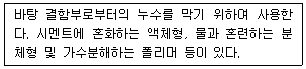
- 보수제
- 접착제
- 지수제
- 경화촉진제
(정답률: 알수없음)
50. 지붕방수공사에 일반적으로 사용되는 방수공사 방법에 소하지 않는 것은?
- 도막방수공사
- 금속판 방수공사
- 벤토나이트 방수공사
- 합성고분자시트 방수공사
(정답률: 알수없음)
51. 시멘트 액체 방수제의 주성분별 구분에 속하지 않는 것은?
- 무기질계
- 유기질계
- 폴리머계
- 염화비닐수지계
(정답률: 10%)
52. 아스팔트 방수공사에서 아스팔트 프라이머의 사용 목적으로 가장 알맞은 것은?
- 콘크리트 면의 습기 제거
- 방수층의 습기 참입 방지
- 콘크리트 밑바닥의 균열 방지
- 콘크리트 면과 아스팔트 방수층의 접착성 향상
(정답률: 알수없음)
53. 다음은 방수 바탕의 물매에 관한 설명이다. ( )안에 알맞은 것은?
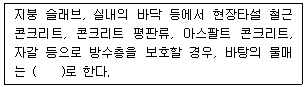
- 1/20 ~ 1/10
- 1/50 ~ 1/20
- 1/100 ~ 1/50
- 1/150 ~ 1/100
(정답률: 50%)
54. 규산질계 도포방수공사에서 방수층의 적용 부위와 방수층의 표준 위치의 연결이 옳지 않은 것은?
- 수조 : 수압측
- 바닥 : 수압측
- 외벽 : 수압측, 배후수압측
- 피트 : 수압측, 배후수압측
(정답률: 40%)
55. 합성고분자계 시트 방수공사에서 시트 붙이기에 관한 설명으로 옳지 않은 것은?
- 비가황고무계 방수시트의 경우, 시트 상호간의 접합폭은 종횡으로 70mm로 한다.
- 가황고무계 방수시트의 경우, 시트 상호간의 접합폭은 종횡으로 100mm로 한다.
- 비가황고무계 방수시트의 경우, 치켜올림부와 평면부와의 접합폭은 100mm로 한다.
- 시트의 접합부는 원칙적으로 물매 위쪽의 시트가 물매 아래쪽 시트의 위에 오도록 겹친다.
(정답률: 24%)
56. 자착형 시트 방수공사 중 고무 아스팔트계 자착형 방수시트의 공정 순으로 옳은 것은? (단, 노출용(1/100~1/50)으로 평탄부(단열재 있음)의 경우)
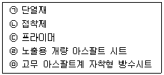
- ㉢ → ㉠ → ㉡ → ㉣ → ㉤
- ㉢ → ㉠ → ㉡ → ㉤ → ㉣
- ㉢ → ㉡ → ㉠ → ㉣ → ㉤
- ㉢ → ㉡ → ㉠ → ㉤ → ㉣
(정답률: 46%)
57. 통상의 보행에 사용되는 지붕 부위에 표준적으로 적용할 수 있는 보호 및 마감은?
- 화장재
- 마감도료
- 아스팔트 콘크리트
- 현장타설 콘크리트
(정답률: 19%)
58. 지하구조물에 사용되는 방수재에 관한 설명으로 옳지 않은 것은?
- 도막계 재료는 기후의 영향을 크게 받는다.
- 시트계 재료는 치밀성, 두께 균질성 등 재료 자체의 방수성이 우수하다.
- 시트계 재료는 코너부, 돌출부 등 굴곡부에서의 바탕면 추종성이 우수하다.
- 도막계 재료는 두께의 불균질, 핀홀 발생 등 방수층의 안정성에 우려가 있다.
(정답률: 37%)
59. 도막방수에 사용되는 보강포에 관한 설명으로 옳지 않은 것은?
- 균일한 도막두께를 확보하기 위해 사용한다.
- 도막 방수층을 자외선 등으로부터 보호하기 위해 사용한다.
- 치켜올림부 또는 경사부에서 방수재의 흘러내림을 방지하기 위해 사용한다.
- 바탕에 균열이 생겼을 경우 방수층의 동시 파단의 위험을 경감하기 위해 사용한다.
(정답률: 알수없음)
60. 개량 아스팔트시트 방수공사에서 일반부의 개량 아스팔트 방수시트의 폭방향 상호 겹침 폭은 최소 얼마 이상으로 하는가?
- 30mm
- 60mm
- 100mm
- 120mm
(정답률: 30%)
4과목: 방수유지관리
61. 다음 중 방수층 부풀음 현상의 방지 대책과 가장 거리가 먼 것은?
- 탈기장치를 설치한다.
- 바탕을 충분히 건조시킨다.
- 바탕과 열팽창계수가 유사한 방수재료를 사용한다.
- 충분한 접착력을 확보할 수 있도록 프라이머를 도포한다.
(정답률: 28%)
62. 습윤조건의 일반 구조물에 수계 에폭시수지 주입재로 누수보수 시공을 할 경우, 구조물 환경과의 적합성 검토 없이 적용할 수 있는 공법은?
- 경사압력주입 공법
- 수직중력주입 공법
- 방수층 재형성 공법
- 주고체 배면주입 공법
(정답률: 39%)
63. 다음 설명에 알맞은 누수 보수를 위한 균열 주입공법은?
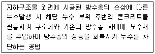
- 경사압력 주입 공법
- 구조체 배면 주입 공법
- 수직압력(중력) 주입 공법
- 방수층 재형성 주입 공법
(정답률: 50%)
64. 다음 중 방수층 시공 완료 후 누수시험으로 담수시험의 적용이 가장 곤란한 것은?
- 수조
- 실내방수
- 지하 구조물
- 소규모의 평지붕
(정답률: 22%)
65. 실령재의 파단원인 중 과도한 응력발생 요인에 속하지 않는 것은?
- 3면 접착
- 기포 혼입
- 줄눈 폭 과소
- 줄눈 깊이 과대
(정답률: 알수없음)
66. 콘크리트 구조물의 거동(수축과 팽창)에 의한 균열로 방수층이 파괴되는 현상은?
- 방수층 들뜸
- 방수층 박리
- 방수층 파단
- 방수층 부풀음
(정답률: 알수없음)
67. 다음 그림과 같은 콘크리트 내·외복 이어치기 부분의 누수 방지 대책으로 적절하지 않은 것은?
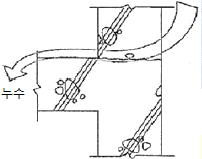
- 이음부위에 지수판을 설치한다.
- 충분한 다짐으로 수밀성을 확보한다.
- 콘크리트 이어치기 시 레이턴스를 제거하지 않는다.
- 콘크리트 타설 시 낙하 높이를 제한하여 골재 분리를 방지한다.
(정답률: 46%)
68. 누수 보수재료에 요구되는 성능 중 물리적 영향에 대한 요구 성능에 속하지 않는 것은?
- 온도의존 성능
- 투수저항 성능
- 습윤면 부착 성능
- 균열 거동 대응 성능
(정답률: 25%)
69. 방수 하자 유형 중 풍압에 의한 들뜸에 관한 설명으로 옳지 않은 것은?
- 들뜸 방지를 위해 내풍압 시험을 통해 검증된 재료를 사용한다.
- 풍압에 의한 부상압은 옥상층의 모든 부분에서 동일한 값을 갑는다.
- 시트방수재를 전면부착 시공하여 부착력을 높이면 들뜸이 방지된다.
- 옥상층에서 풍앞에 의한 부상압으로 인해 방수층이 떠오르는 현상이다.
(정답률: 37%)
70. 다음 설명에 알맞은 방수하자 유형은?
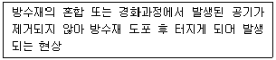
- 핀홀
- 들뜸
- 용해
- 화학적 침식
(정답률: 37%)
71. 누수 진단 시 사용되는 육안 조사용 도구(기구)에 속하지 않는 것은?
- 캘리퍼스
- 테스트 해머
- 크랙 스케일
- 초음파 두께 측정기
(정답률: 50%)
72. 시트 방수재의 접합부 들뜸에 관한 설명으로 옳지 않은 것은?
- 접합부 들뜸 방지를 위해 접합부는 4겹 겹침으로 시공한다.
- 접합부 들뜸 방지를 위해 접합부는 접착제 또는 열융착의 시공 방법을 적용한다.
- 가장자리의 시공에 있어서 바탕 요철부 처리가 미흡할 경우 들뜸이 발생한다.
- 시트와 시트 겹침부위에 단차로 인한 홈이 발생할 경우 물길이 형성되어 누수가 발생한다.
(정답률: 50%)
73. 도막 방수공사에서 발생되는 하자 유형에 속하지 않는 것은?
- 핀홀
- 부풀음
- 접합부 찢김
- 들뜸 및 박리
(정답률: 28%)
74. 아스팔트 방수공사의 보수 방법으로 옳지 않은 것은?
- 아스팔트를 바를 때는 2차 바름으로 바른다.
- 보강포를 보수면보다 넓게 재단하여 적층한다.
- 절개한 면을 가열 없이 쇠흙손을 사용하여 고르게 펴 바른다.
- 작은 결함 내지 파손부위는 건전한 부위까지 광범위하게 절개한다.
(정답률: 28%)
75. 다음은 옥상녹화 방수의 누수 방지를 위한 관리방법에 관한 설명이다. ( )안에 공통으로 들어가는 용어는?
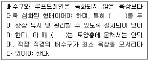
- 공동구
- 점검구
- 청소구
- 오버 플로우
(정답률: 40%)
76. 창고 주변의 구조체와 마감층에서 누수가 발생 하였을 경우, 확인 사항과 가장 거리가 먼 것은?
- 적정 벽두께
- 밀실한 벽체 형성
- 유도줄눈의 적절한 배치
- 새시 교차 부위(접합부)의 지수 처리
(정답률: 34%)
77. 다음 중 시트 방수공사의 열융착에 의한 접합부 시공에서 발생되는 하자를 예방하기 위한 방법과 가장 거리가 먼 것은?
- 두껍고 변형이 없는 재질인 경우 실재로 보강한 후 시공한다.
- 직접 가열 방식을 적용하여 상호 부착면을 완전히 녹인 후 시공한다.
- 불꽃의 불규칙한 연소로 시트면의 부착불량 부위가 발생하지 않도록 시공한다.
- 기계식 열풍 융착기를 사용하여 가열과 롤링에 의한 압착을 동시에 실시한다.
(정답률: 37%)
78. 누수균열 보수재료 중 우레탄수지계 발포형 주입재에 관한 설명으로 옳지 않은 것은?
- 수압이 지속적으로 작용하는 곳에 주로 사용된다.
- 유연성이 있어서 균열 폭의 거동에 대응이 가능하다.
- 습윤 조건의 일반 구조물에 경사압력주입공법으로 적용이 가능하다.
- 물과 반응하여 스펀지형으로 발포체를 형성하여 물의 흐름을 제어한다.
(정답률: 37%)
79. 다음 중 일상적인 유지관리업무의 방수결함 상태 점검 시 가장 먼저 점검하는 부분은?
- 드레인 주위
- 평면부 방수층
- 접합부 마감상태
- 파라펫 선단부분
(정답률: 39%)
80. 누수균열 보수재료 중 시멘트계 주입재에 관한 설명으로 옳지 않은 것은?
- 수중 불경화성이다.
- 대체로 경질형 재료이다.
- 경화 시에 건조 수축이 있다.
- 유연성이 우수하여 구조물 거동에 대한 적응성이 높다.
(정답률: 46%)